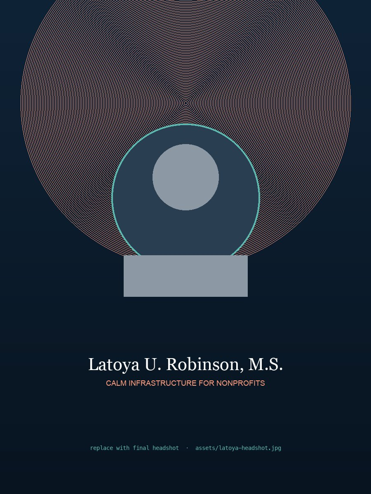

A free 90-minute live webinar for nonprofit executives and directors.
Two live walkthroughs. One framework you can run on Monday. Built for leaders tired of AI slop, demo-ware, and "transformation" decks that never ship.
Before you register, a short video from Latoya on what "calm infrastructure" means, the three-layer framework, and what you'll leave the session with.
Voice is the trust layer. AI carries the drafting weight; a human carries the voice. The workflow's job is to protect it, not flatten it.
One well-designed workflow, run weekly, returns hours for the rest of the year. Not speed on one task, structural return of leaking hours.
Never replace the human relationship at the heart of the program. Open the door only where the program itself invites it.

I spend my days inside nonprofits that have been handed AI like it's a rescue. It's not. AI is raw material, the quality of the integration decides whether it saves you or costs you.
For seven years I've designed workflows for EDs, comms leads, and development directors. The ones that stuck weren't the flashy ones. They were the calm ones: boring to describe, compounding week after week, running quietly in the background while the team got its weekends back.
I built this webinar for the leaders who keep being sold on speed when what they actually need is sustainability.
Yes. Everyone who registers gets the replay by email within 24 hours. It's available for 72 hours after the live session. That said, the live Q&A is the part worth showing up for.
No. This is a framework webinar, not a tutorial. You'll leave knowing how to think about AI in your organization, not which buttons to click. If you can run a donor meeting, you can run this framework.
Yes, in the last 20 minutes. For 60 minutes straight there is no pitch. After the framework and the two walkthroughs land, I share one offer for leaders who want structured help implementing. You're free to leave. Most don't.
Especially. Smaller orgs feel the compound returns first because one workflow is a bigger share of the week. The framework is budget-neutral, the tools we use are either free or already in your stack.
Please do. One registration per person, and forward the confirmation email freely. Leaders who register together run the framework together; that's the pattern that sticks.
90 minutes on Thursday, May 21. If it's not the highest-leverage hour you've spent this quarter, say so, and I'll send you the framework deck anyway.
Save my seat → May 21 at 12 PM ET →The three-layer framework as a 12-page PDF. The same map we'll walk through together, written out. Yours to use, share with your team, or sit on until the timing is right. No webinar commitment.